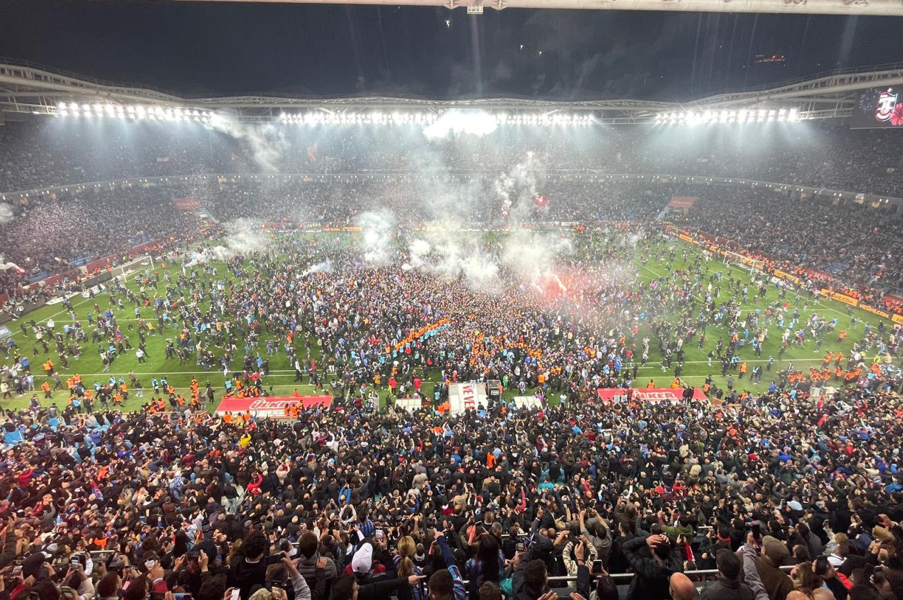

BAŞARILAR

- 8 kez Türkiye Süper Lig Şampiyonluğu
- 9 kez Türkiye Kupası Şampiyonluğu
- 3 kez TFF Süper Kupa Şampiyonluğu
- 7 kez Cumhurbaşkanlığı Kupası Şampiyonluğu
- 5 kez Başbakanlık Kupası Şampiyonluğu
- Kıbrıs Barış Kupası Şampiyonluğu
- İkinci Lig Kırmızı Grup Şampiyonluğu